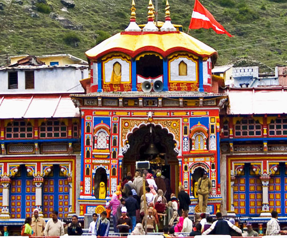
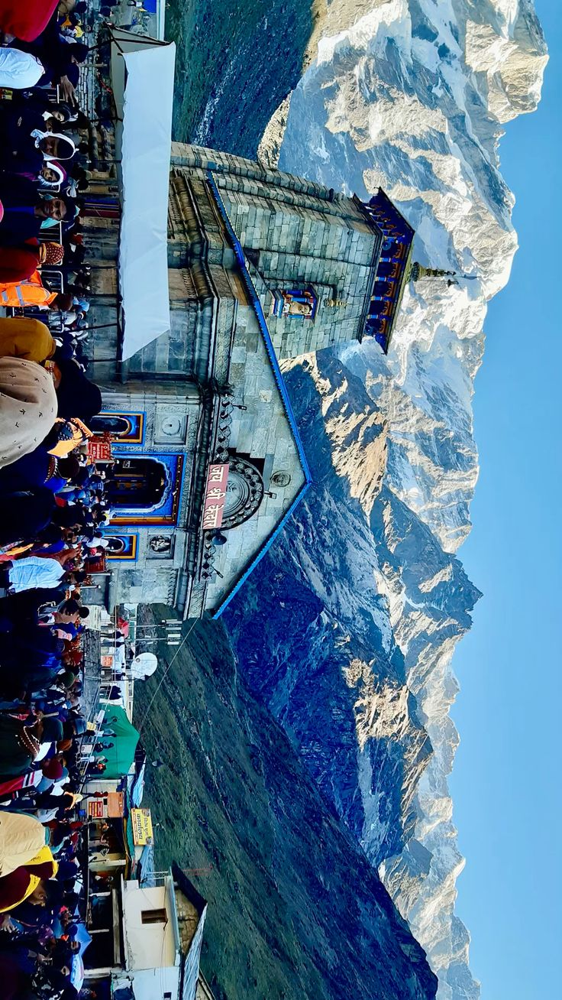

Divine abodes in the Himalayas
One of the four Char Dhams and the holiest shrine of Lord Vishnu

Shri Badarinath Temple, located at an altitude of 3,133 meters in the Chamoli district of Uttarakhand, is dedicated to Lord Vishnu. The temple is situated in the Garhwal Division of Uttarakhand in the Himalayas, between Nar and Narayana mountain ranges and in the shadow of Neelkanth peak.
The temple is believed to be established by Aadi Guru Shankaracharya. The presiding deity is a one-meter tall black stone idol of Lord Badrinarayan, which is considered one of eight swayam vyakta kshetras (self-manifested statues). It is one of the 108 Divya Desams dedicated to Vishnu and forms part of the sacred Char Dham pilgrimage.
The Shri Badarinath Kedarnath Temple Committee (BKTC) was constituted as per the 1939 Act and manages the temple and its affairs. The temple architecture reflects traditional Garhwali style with a colorful façade.
Chamoli, Uttarakhand
Altitude: 3,300 m (10,827 ft)
Lord Badrinarayan
(Form of Vishnu)
April-May to Oct-Nov
(Weather dependent)
Motorable Road
From Rishikesh: 298 km
4:30 AM - 5:00 AM
Morning Mangla Arti
7:00 AM - 12:00 PM
Morning Darshan
12:30 PM - 3:00 PM
Afternoon Bhog & Temple Closure
3:00 PM - 9:00 PM
Evening Darshan & Arti
Note: Timings may vary during special occasions and weather conditions
Lord Vishnu was performing deep penance in the Himalayas. Goddess Lakshmi, to protect him from harsh weather and sun, transformed herself into a Badri tree (Indian Jujube). Pleased by her devotion, Lord Vishnu declared that henceforth this place would be known as Badrikashram and he would be known as Badrinath - the Lord of Badri forest.
The twin Himalayan peaks of Nar and Narayana are believed to be the forms of ancient sages Nar and Narayana (incarnation of Vishnu) who performed intense penance here. The valley between these peaks is where Lord Vishnu meditated, making it eternally sacred.
In the 8th century, Adi Shankaracharya discovered the idol of Lord Badrinarayan in the Alaknanda River and installed it in a cave near the Tapt Kund. Later, the Kings of Garhwal built the present temple. Shankaracharya also established the tradition of Rawal (head priest) to conduct daily pujas.
Nearest Airport: Jolly Grant Airport, Dehradun (317 km)
Regular flights from Delhi, Mumbai. Taxis available from airport to Badrinath (8-9 hours drive).
Nearest Railway Station: Rishikesh (298 km) / Haridwar (324 km)
Well connected to major cities. Buses and taxis available to Badrinath.
Route: Rishikesh → Devprayag → Rudraprayag → Karnaprayag → Joshimath → Badrinath
Regular bus services from Rishikesh, Haridwar, and Dehradun.
One of the twelve Jyotirlingas and holiest shrine of Lord Shiva

Shri Kedarnath Temple, situated at an altitude of 3,583 meters near the Chorabari Glacier in the Garhwal Division of Uttarakhand, is dedicated to Lord Shiva. It is the eleventh out of twelve sacred Jyotirlingas of India and the first among the Panch Kedar temples.
The temple is believed to be established by Aadi Guru Shankaracharya and is managed by the Shri Badarinath Kedarnath Temple Committee (BKTC), which was constituted as per the 1939 Act. The temple is constructed of massive stone slabs over a large rectangular platform, with architecture believed to be over 1,000 years old.
Behind the temple stands the mighty Kedarnath peak. The temple miraculously survived the devastating 2013 floods, with a massive boulder (now known as Bhim Shila) protecting it from destruction. The temple holds immense spiritual significance and attracts millions of pilgrims annually.
Rudraprayag, Uttarakhand
Altitude: 3,583 m (11,755 ft)
Lord Shiva
(Jyotirlinga Form)
May to Oct-Nov
(Winter closure)
16 km Trek from Gaurikund
Helicopter available
4:00 AM - 9:00 AM
Morning Darshan & Abhishek
12:00 PM - 5:00 PM
Afternoon Darshan
5:00 PM - 7:30 PM
Evening Arti
7:30 PM - 8:30 PM
Night Shayan Arti
After the Mahabharata war, the Pandavas sought Lord Shiva's blessings to atone for killing their cousins. Lord Shiva, unwilling to meet them, disguised himself as a bull. Bhima recognized him and tried to catch him, but the bull (Lord Shiva) dived into the ground, leaving his hump on the surface. This hump is worshipped at Kedarnath as the Jyotirlinga.
After diving into the ground at Kedarnath, different body parts of Lord Shiva appeared at five different places: The hump appeared at Kedarnath, arms at Tungnath, face at Rudranath, navel at Madmaheshwar, and hair at Kalpeshwar. These five temples are collectively known as Panch Kedar.
During the devastating 2013 floods, a massive boulder rolled down and positioned itself behind the temple, dividing the flood waters and protecting the shrine from destruction. Devotees believe this was divine intervention, and the boulder is now worshipped as "Bhim Shila," symbolizing Lord Shiva's protection.
Route: Gaurikund → Rambara (7 km) → Kedarnath (9 km)
Trek duration: 6-8 hours. Ponies and palanquins available. Rest points and refreshments available en route.
From: Phata, Guptkashi, Sersi
Flight duration: 7-10 minutes. Advance booking required. Weather dependent service.
From Rishikesh: 215 km by road (Rishikesh → Rudraprayag → Guptkashi → Gaurikund)
Regular buses and taxis available.
Shri Badarinath Kedarnath Temple Committee manages 45+ sacred temples across Uttarakhand including the main shrines of Badrinath and Kedarnath.
Location: Tunganath, Rudraprayag
Altitude: 3,680 m (highest Shiva temple)
Trek: 3 km from Chopta
Contact: +91-7302257116
Location: Madmaheshwar
Deity: Lord Shiva (Navel form)
Part of: Panch Kedar
Contact: +91-7302257116
Location: Rudranath
Deity: Lord Shiva (Face form)
Part of: Panch Kedar
Contact: +91-7302257116
Location: Kalpeshwar, Urgam Valley
Deity: Lord Shiva (Hair locks form)
Open: Year-round
Contact: +91-7302257116
Location: Subhain near Tapovan, Joshimath
Altitude: 2,744 m
Deity: Narsiarsimh (Lion-headed)
Significance: Future Badari
Location: Pandukeshwar (24 km from Badrinath)
Altitude: 1,929 m
Deity: Lord Vishnu (meditative posture)
History: Pandavas retired here
Location: Urgam Village
Deity: Lord Vishnu (meditation)
Part of: Panch Badari
Contact: +91-7302257116
Location: Animath
Deity: Old form of Badrinath
Part of: Panch Badari
Contact: +91-7302257116
Location: Karnaprayag
Deity: Ancient Badrinath
Part of: Panch Badari
Contact: +91-7302257116
Hot spring tank at Badrinath. Pilgrims take ritual bath before darshan. Natural thermal spring with medicinal properties.
Sacred ghat on Alaknanda River. Hindus perform rituals for departed souls. Located near Badrinath temple.
Location: Opposite Mana village
Deity: Mother of Badrinarayan
Festival: Vaman Dwadashi
Powers of granting wishes
Ancient Kedar temple at Badrinath. Managed by BKTC. Contact: +91-7302257116
Five sacred stones within Badrinath Puri. Each has religious significance in Hindu mythology.
Five sacred water streams within Badrinath Puri. Each has unique spiritual importance.
Location: Joshimath
Deity: Narsiarsimh Avatar
Significance: Winter seat of Badrinath
Helpline: +91-8979001008
Location: Guptkashi
Deity: Lord Shiva
Significance: Ancient Shiva temple
Contact: +91-7302257116
Location: Gaurikund
Deity: Goddess Parvati
Significance: Base for Kedarnath trek
Hot Spring: Sacred bathing ghat
Location: Triyuginarain
Significance: Marriage place of Shiva-Parvati
Eternal Flame: Burns since 3 yugas
Sacred Kunds: Rudrakund, Vishnukund
Location: Ukhimath
Deity: Lord Shiva
Winter Seat: Kedarnath idols
Contact: +91-7302257116
Location: Kalishila (4 km from Kalimath)
Deity: Maa Kali (stone form)
Significance: Shakti Peeth
Contact: +91-7302257116
Location: Jyoteshwar
Deity: Lord Shiva
Managed by: BKTC
Contact: +91-7302257116
Location: 6 km from Mana village
Height: 400 feet waterfall
Sacred Site: Dharamshila at bottom
Managed by BKTC
For information about any of the 45+ temples managed by BKTC, contact:
+91-7302257116 (8 AM to 6 PM)
Email: support-ucdb@uk.gov.in
Source: Official BKTC Website
Total temples managed: 47+ temples including the main shrines of Badrinath and Kedarnath
Origin of the holy river Ganga. Temple dedicated to Goddess Ganga. Altitude: 3,100 meters. Trek to Gaumukh glacier (18 km) for Ganga's source.
Source of the Yamuna river. Temple dedicated to Goddess Yamuna. Altitude: 3,293 meters. Sacred Surya Kund hot spring for cooking rice offerings.